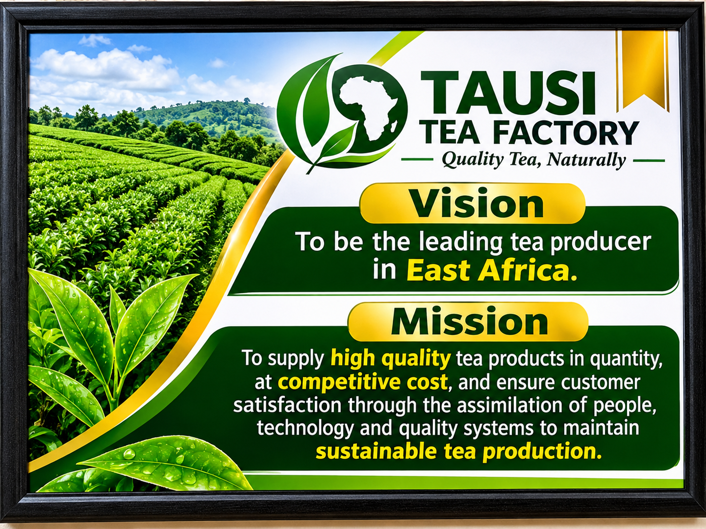

Black tea
A popular tea category known for its rich colour and full-bodied character.
From the tea garden to your cup
Welcome to Tausi Tea Factory. We believe good tea begins with care for the tea leaf and continues through thoughtful processing, quality checks and reliable service.
Who we are
Tausi Tea Factory is presented here as a tea-processing and supply business with a focus on delivering carefully handled tea to customers. Our aim is to connect the work that begins in the tea gardens with the enjoyment of a good cup of tea.
We value product consistency, responsible handling, good customer relationships and continuous improvement throughout the tea value chain.

Our vision
To be the leading tea producer in East Africa.
Our mission
To supply high-quality tea products in quantity at competitive cost, ensure customer satisfaction, and use people, technology and quality systems to maintain sustainable tea production.
What we offer
A popular tea category known for its rich colour and full-bodied character.

Careful handling of harvested tea leaves is an important part of maintaining quality during processing.

For business buyers seeking larger quantities. We have both wholesale and retail.

Our commitment
Tea production depends on the knowledge and effort of people across the tea value chain. Tausi Tea Factory's proposed approach is to encourage respectful relationships with growers, workers, suppliers and customers.
From leaf to finished tea
Tea processing varies according to the tea type and factory method.
Fresh tea leaves are harvested and transported for processing.
Leaves may be withered and then processed according to the intended tea style.
Tea is dried and sorted into grades based on the production method and specifications.
Finished tea is checked, packed, stored and prepared for distribution.
Quality matters
Our proposed quality focus is on clean handling, suitable storage, careful processing and checks against agreed product requirements.
Let's connect
Contact us about product information, wholesale supply, partnerships or general enquiries.
Phone / WhatsApp
0200912823/0200912503
Email
tausiteafactory@gmail.com
Factory location
Western Uganda, Bushenyi District, along Ishaka–Kasese Road
Business hours
Mon-Fri 8am-5pm